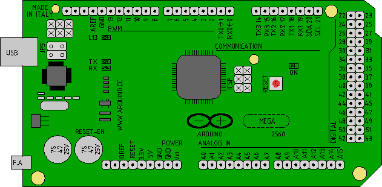
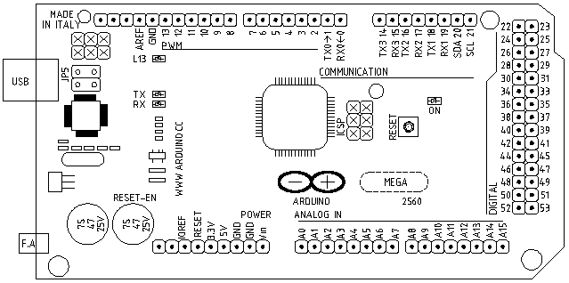

TINKERCAD Y MBLOCK
ENLACESTINKERCAD Simulador de electrónica y Arduino
MBLOCK Crea programas para arduino sin escribir una sola linea de códigoEJEMPLOS:
Pincha aquí para descargar todos los ejemplos realizados con mblock (extensión sb2)
Pincha sobre la foto ver el funcionamiento en tinkercad


ESQUEMAS
Dibujos de la placa de arduino, realizado con librecad.
Archivo en dxf.Placa arduino exportada a png y colereada con GIMP

Placa arduino exportada desde libreCAD a PNG.

El fin de hombre es
perseguir la felicidad.